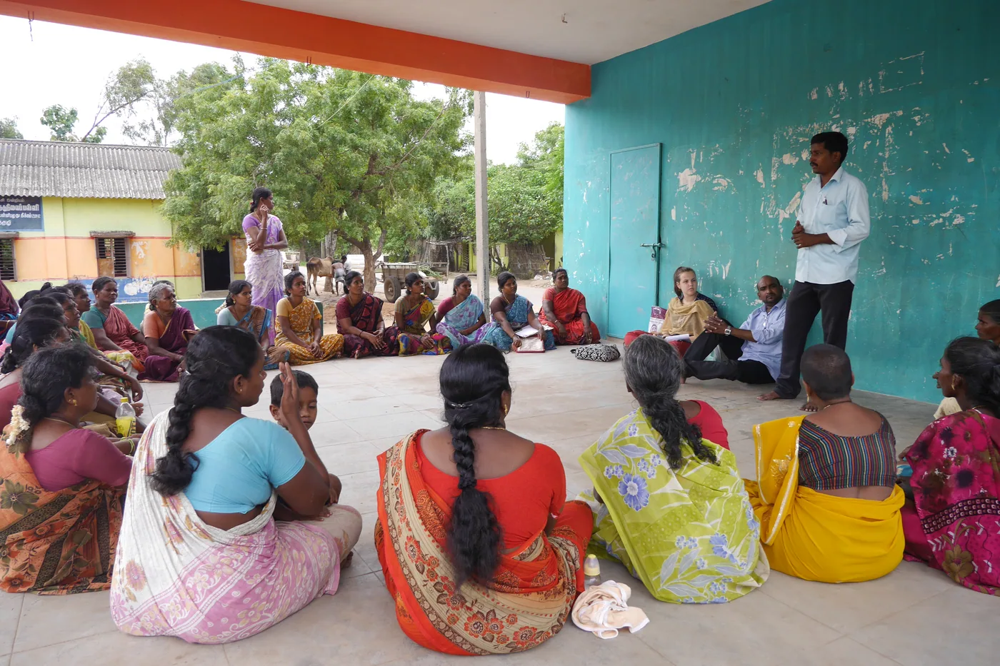
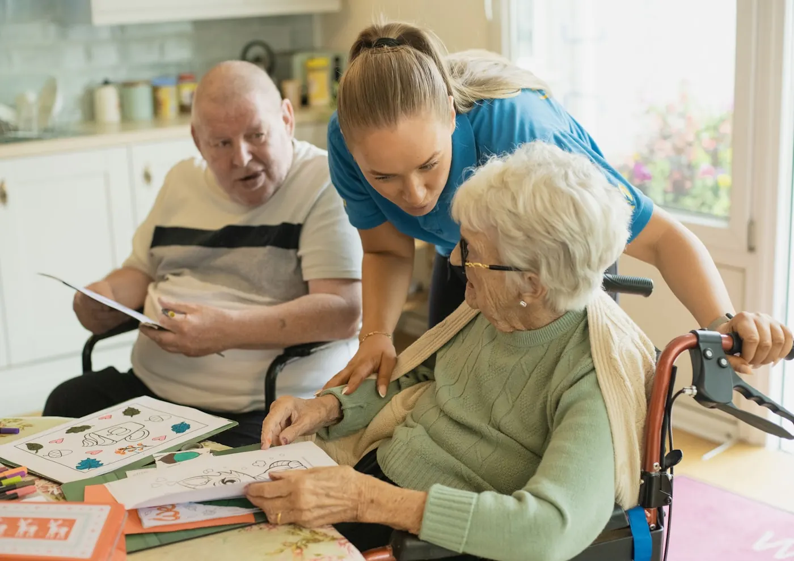
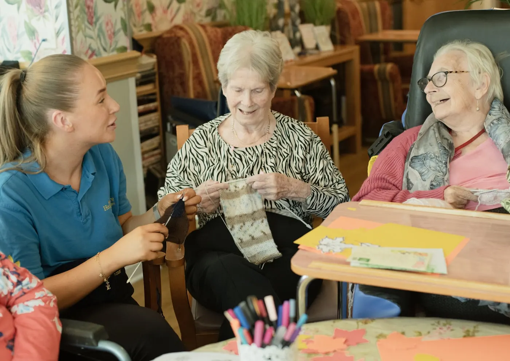
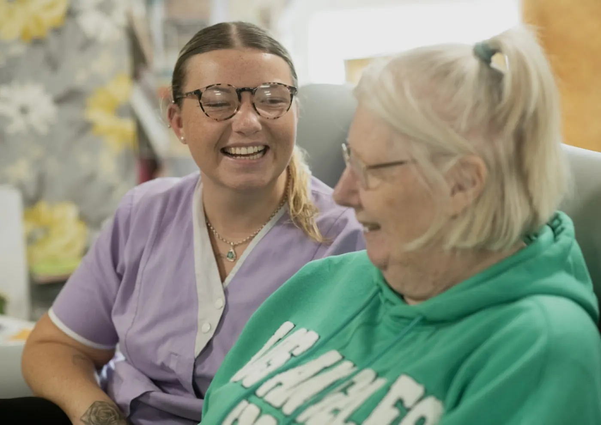
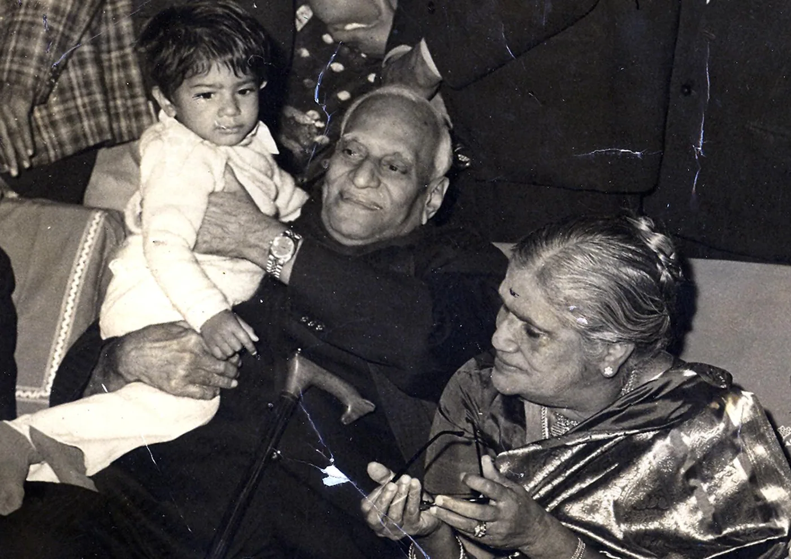
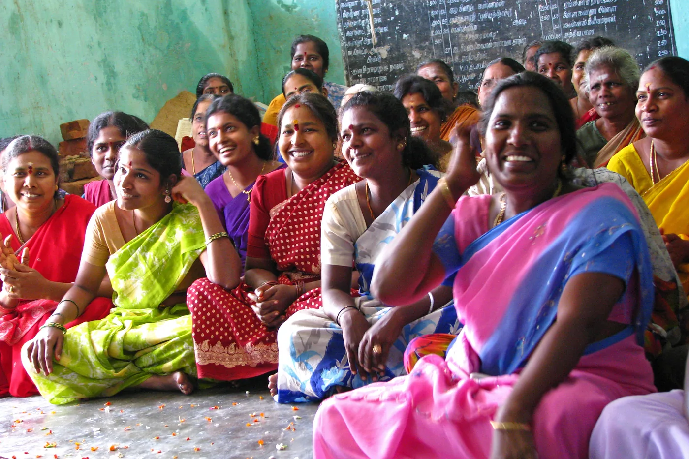

Individuals
Help at camps and open days, assist in the classroom, prepare learning materials, or spend time with an adult who has few visitors. Regular volunteers are matched to one group so the people they support see the same face each week.
Four ways to help
You do not need a clinical background, and you do not need to know anything about autism. The work spans mental health broadly — children, adults, older people. Some of the most useful volunteers have never worked in this field at all: they can drive, cook, photograph, fix, teach a craft, or simply sit with someone.
Help at camps and open days, assist in the classroom, prepare learning materials, or spend time with an adult who has few visitors. Regular volunteers are matched to one group so the people they support see the same face each week.
Psychology and education students, therapists, teachers, SLPs and OTs. Volunteering here can run alongside supervised hours — if you are working towards IBA or IBT certification, say so and we will structure it properly rather than informally.
Team volunteering days, CSR partnerships, sponsoring a therapy place or a classroom’s materials, donating equipment, or offering skills your staff already have — accounting, design, transport, IT. We will tell you honestly which of those we actually need this quarter.
You do not have to be in Islamabad. Translation, admin, fundraising, social media, grant writing and remote mentoring all get done by people we have never met in person.
Not only children, not only autism
The centre began with children, but the founder is a clinical psychologist and the need does not stop at childhood or at one diagnosis. We work with adults as well — and we take on mental health work anywhere we can genuinely help, not only autism.
Autistic children become autistic adults, and almost every service in the country stops at eighteen. Alongside that: older adults who are isolated, carers who are exhausted, adults living with anxiety, depression or grief, and people whose disability was never assessed at all.
Volunteers are needed for all of it — independence and daily routines, employment readiness, community access, and simple company, which for isolated adults is the thing in shortest supply. This is often where someone with ordinary life experience is worth more than a clinician. If you can teach a person to cook, use a bus, sit an interview or hold a conversation, you are qualified.

Volunteer work
Photographs of real sessions — camps, company days, adult services, classroom help.





Before you sign up
Confidentiality and safeguarding are not paperwork here. You will be around children and adults who cannot always speak for themselves, and the induction spends most of its time on exactly that.
Register your interest
Prefer to talk? Call or WhatsApp +92 302 5252 556.